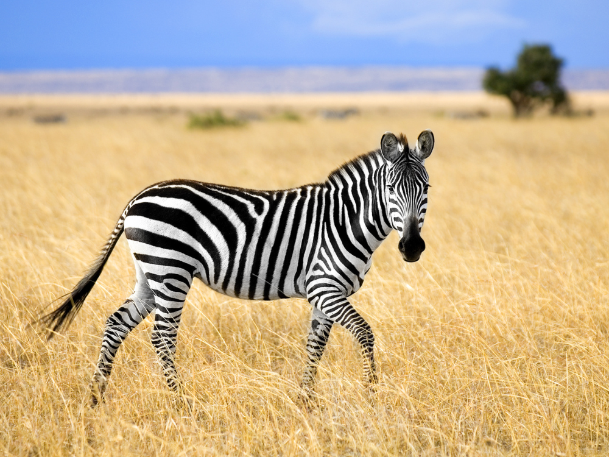
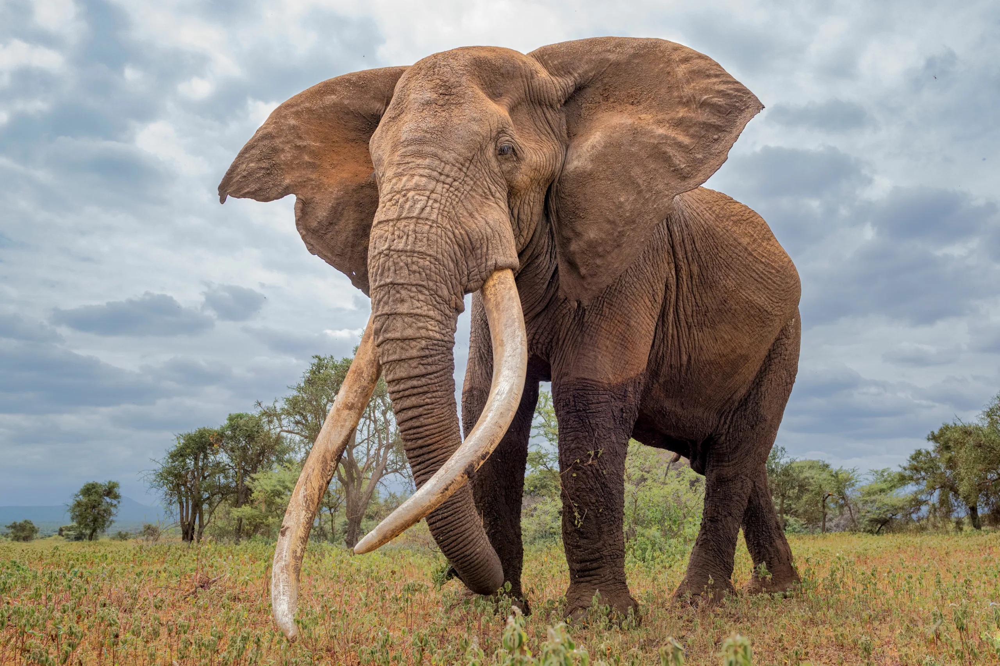

Savana je mešan gozdno travniški ekosistem
Ima značilnimi dreves, ki so dovolj na široko razporejena tako, da krošnja ne zapira prostora.
Odprta krošnja omogoča dovolj svetlobe, da ta doseže tla in omogoča zelnat sloj iz trav.
Za savane je značilna tudi sezonska razpoložljivosti vode
Večin padavin je omejenih le na eno sezono.
Savana pokriva približno 20% površine Zemlje.
Savane in stepe na zemlji so, poleg tropskega deževnega gozda, zelo pomembne kot ponori ogljika in s tem za svetovno podnebje.
Če vas zanima kaj več, si preberite:

